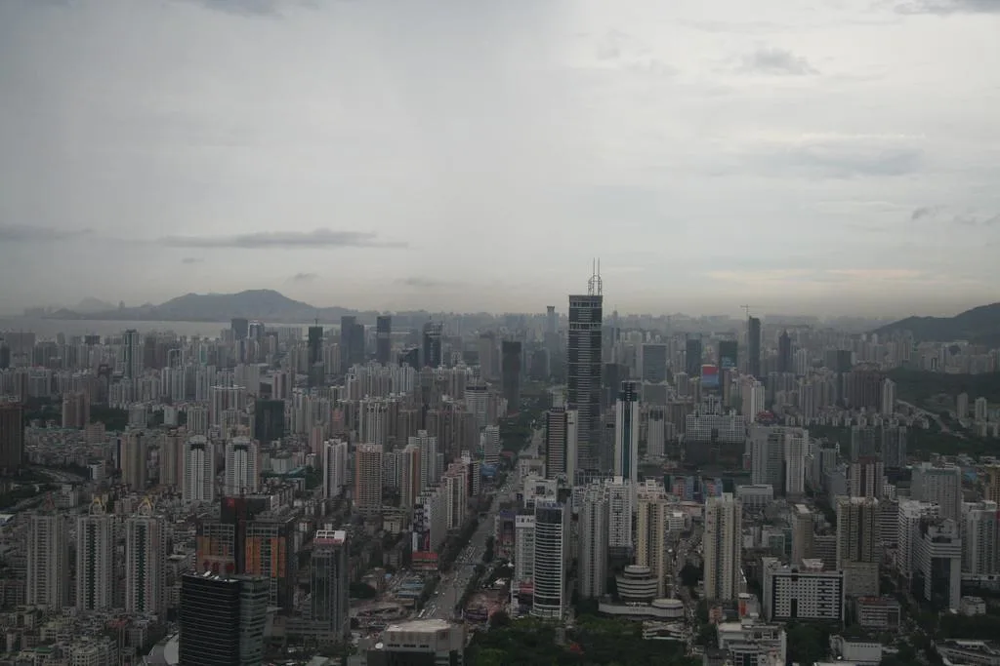
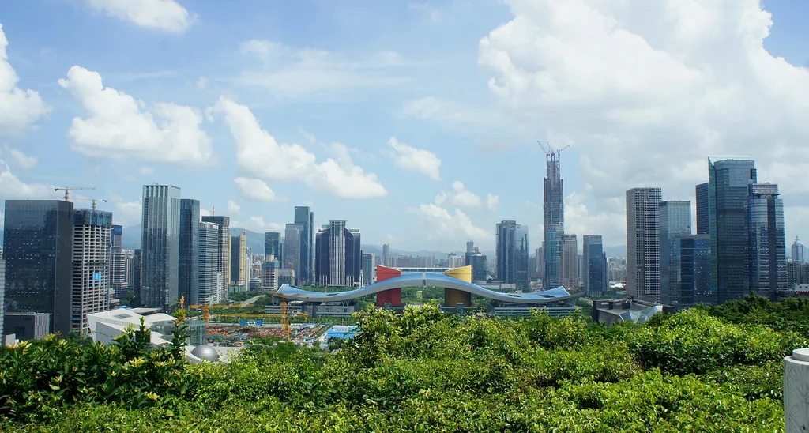

중국 선전에서 열린 2026 아시아태평양경제협력체(APEC) 정상회의가 19일 막을 내렸다. 이번 회의 기간에는 미국·중국·러시아 정상이 처음으로 한자리에 모인 3자 정상회담이 열렸고, 세 정상은 핵 위험을 줄이기 위한 대화를 이어가기로 합의한 것으로 전해졌다. 회원국 정상들은 '선전 전망(Shenzhen Vision)'이라는 제목의 정상선언을 만장일치로 채택하며 일정을 마무리했다. 보호무역 기조가 짙어지는 가운데 열린 회의였던 만큼, 강대국 간 대화 채널이 마련될지가 최대 관심사였다.
3자 회담은 선전의 영빈관에서 진행됐다. 크렘린궁은 회담에 약 1시간이 배정됐다고 밝혔다. 외신 보도에 따르면 세 정상은 핵 위험 감소와 핵확산 방지를 위한 대화를 이어가자는 데 뜻을 모았고, 한반도 문제도 의제에 올랐다. 트럼프 대통령은 이와 별도로 시진핑 주석과 양자 정상회담을 했고, 푸틴 대통령과도 40분가량 약식 회담을 갖고 우크라이나 전쟁 등을 논의한 것으로 알려졌다.

다만 핵심 현안에서 눈에 띄는 진전은 확인되지 않았다는 평가도 나온다. 관심을 모았던 북미 정상 간 회동은 성사 여부가 확인되지 않은 채 트럼프 대통령이 귀국길에 올랐고, 우크라이나 종전 문제 역시 구체적인 합의 소식은 전해지지 않았다. 회의 기간 내내 통상과 안보를 둘러싼 긴장도 드러났다. 시진핑 주석은 보호무역주의에 맞서 다자무역 체제를 지키겠다고 강조했고, 푸틴 대통령은 서방의 대러 제재가 오히려 역효과를 냈다고 주장했다.
이재명 대통령은 정상회의 발언에서 '함께 도약하는 혁신', '모두를 위한 회복력 강화', '포용적 미래를 위한 협력'을 3대 비전으로 제시했다. 특히 역내 에너지 수급 정보를 공유하고 공동 비축과 공동 대응 체계를 갖추며, 비상시 수급 안정 협력을 제도로 만들자고 제안했다. 한 나라의 공급 차질이 이웃 나라로 번지는 상황에 평소부터 함께 대비하자는 취지다. 장기 과제로는 재생에너지 확대와 전기화 가속을 꼽았다.
이 대통령은 한국이 주요 에너지 수입국이면서 동시에 석유제품을 공급하는 나라라는 점을 들어, 수입국과 공급국을 잇는 가교 역할을 하겠다고 밝혔다. 인공지능(AI) 분야에서는 지난해 경주 APEC에서 채택된 'APEC AI 이니셔티브'를 언급하며 AI의 혜택을 모두가 누리는 'AI 기본사회'를 새로운 기준으로 내세웠다. 설립을 추진 중인 '아시아·태평양 AI 센터'를 역내 협력 거점으로 키우겠다는 구상도 함께 내놓았다.

인구구조 변화에 대한 대응도 의제로 다뤄졌다. 이 대통령은 청년·여성 창업가와 투자자를 연결하는 역내 협력을 넓히겠다고 했고, 다자 무역질서 회복과 한반도 평화에 대한 지지도 요청한 것으로 전해졌다. 한국은 지난해 APEC 의장국으로서 이번 회의에서 내년 의장국인 베트남에 이어 두 번째로 발언했다.
이번 회의는 강대국 정상들이 직접 마주 앉는 장을 마련했다는 점에서 의미가 있다는 평가와, 선언적 합의에 그쳤다는 지적이 엇갈린다. 핵 위험 감소 대화가 실제 협의 채널로 이어질지, 에너지 공동비축 같은 제안이 회원국 간 구체적인 제도로 발전할지는 앞으로의 후속 논의에 달려 있다. 이 대통령은 회의 일정을 마치고 19일(현지시간) 선전을 떠나 귀국했다.